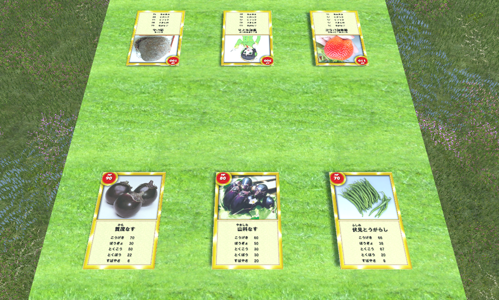

<!DOCTYPE html>
<html lang="ja">
<head>
<meta charset="UTF-8">
<script type="text/javascript">
	if(location.protocol == 'http:') { //httpsへリダイレクト
	  location.replace(location.href.replace(/http:/, 'https:'));
	}
</script>
<meta name="viewport" content="width=device-width,initial-scale=1.0,minimum-scale=1.0" />
<meta name="description" content="京野菜をより身近に！京都市の京野菜オープンデータをデジタルアプリで。バトルデータを「創る」。プログラミング教育に「京育」効果。" />
<meta name="keywords" content="京都,統計,国勢調査,人口,経済" />
<link rel="canonical" href="https://kyoyasai.mirko.jp/" /> 
<link rel="icon" href=""><!-- ファビコン -->
<link rel="apple-touch-icon" sizes="180x180" href=""><!-- スマホ用アイコン -->

<!--OGP設定-->
<meta property="og:site_name" content="KyoYasai 京育カードバトル with AR" />
<meta property="og:title" content="KyoYasai 京育カードバトル with AR" />
<meta property="og:url" content="https://kyoyasai.mirko.jp/" />
<meta property="og:image" content="" />
<meta property="og:description" content="京野菜をより身近に！京都市の京野菜オープンデータをデジタルアプリで。バトルデータを「創る」。プログラミング教育に「京育」効果。" />
<meta property="og:type" content="website" />
<!--Twitter Card設定-->
<meta name="twitter:card" content="summary_large_image" />
<meta name="twitter:site" content="@Kyoto Lovers" />
<meta name="twitter:creator" content="@Kyoto Lovers" />
<meta name="twitter:title" content="KyoYasai 京育カードバトル with AR" />
<meta name="twitter:description" content="京野菜をより身近に！京都市の京野菜オープンデータをデジタルアプリで。バトルデータを「創る」。プログラミング教育に「京育」効果。">
<meta name="twitter:image:src" content="">

<title>KyoYasai 京育カードバトル with AR</title>
<link rel="stylesheet" type="text/css" href="css/common.css">       <!-- 枠組みを指定するスタイルシート -->
<link rel="stylesheet" type="text/css" href="css/parts.css">        <!-- 見出しなどを指定するスタイルシート -->
<link rel="stylesheet" type="text/css" href="css/menu.css">         <!-- メニューバー用スタイルシート -->
<script src="js/header_footer2.js"></script>

<script type="text/javascript">
	window.addEventListener("load",makeHeaderFooter,false);  // ヘッダーとフッターを挿入
</script>
<!-- スライドショー用-->

<!-- jQuery library (served from Google) -->
<script src="js/jquery_min.js"></script>
<script src="js/jquery.bxslider.min.js"></script>
<link href="css/jquery.bxslider.css" rel="stylesheet" />

</head>
<body>

<div class="parent" id="parent"  style="display:none;">
<div class="inner">
<div id="header-box"><!-- ここに「header_footer.js」に書き込まれたヘッダー部分が自動で入ります --></div>
<div id="main-box">

<!-- スライドショー用 -->
<!--
<div style="width:100%;">
<div style="width:600px; margin: 0 auto;">
-->
<div class="slider">


</div>
<!--
</div>
</div>


<p style="text-align:center;font-size:large;line-height:230%;">
<span style="font-size:xx-large;">京野菜をより身近に！</span><br>
京野菜オープンデータをデジタルカードゲームアプリで。<br>
カードにＡＲ、立体野菜を。<br>
バトルデータを「創る」。プログラミング教育に「京育」効果。<br>
学・産・公共の融合の結晶をぜひ！！<br>
</p>

<div style="text-align:center;border: 0px solid #000000;"></div>
-->


</div>


<div id="footer-box"><!-- ここに「header_footer.js」に書き込まれたフッター部分が自動で入ります --></div>


</div><!-- class="inner"終了 -->
</div><!-- class="parent"終了 -->
</body>
</html>
